|
|
| hard corals text index | photo index |
| Phylum Cnidaria > Class Anthozoa > Subclass Zoantharia/Hexacorallia > Order Scleractinia > Family Dendrophyllidae |
| Disk
corals Turbinaria sp. Family Dendrophylliidae updated Sep 2025 Where seen? These disk-shaped hard corals are among the most commonly seen on many of our shores. Features: Colonies can be large (20-50cm). A colony can take on a wide variety of shapes, depending on surrounding environment factors. Thus it is hard to distinguish Turbinaria species by the colony shape alone. Colonies may form plates that may simply be flat disks; or encrusting to follow the contours of the surface; sometimes with towers rising from the centre; to cup- or vase-like shapes. Colonies growing in areas with high water movement may become twisted and folded into flower-like shapes or other fantasty shapes. They come in a wide range of colours from blue, green to yellow and brown, and pink often in pastel shades. The corallites are distinctively spaced apart, usually with a smooth surface in between them. Corallites are only found on the upper surface of the colony. In some species, the corallites are shallow cups sunken into the surface, in others sticking out in tubular or conical shapes. Polyps generally look like tiny sea anemones with a tubular body column and a ring of tentacles around a central mouth. Species are difficult to positively identify without close examination. On this website, they are grouped by external features for convenience of display. See details below. Status: Turbinaria reniformis is listed as Near Threatened, but for others there is inadequate information as at 2024 to make an informed assesment of their conservation status in Singapore. |
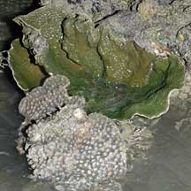 Tuas, Jul 06 |
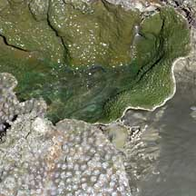 Two different kinds of Disk corals |
| Some Disk corals on Singapore shores |
|
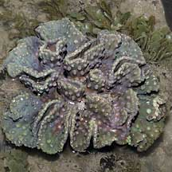 Flowery disk coral Turbinaria peltata Colony flat plate often ruffled so it resembles a cabbage. |
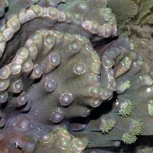 Corallites sunken to sticking out and tubular, large (0.6cm). |
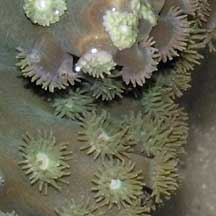 Polyps large and expanded even during the day. |
|
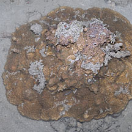 Encrusting disk coral Colony plate-like thick (1cm) encrusting, edges against the surface. |
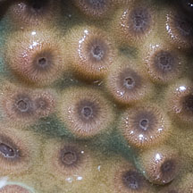 Corallites sunken to conical. |
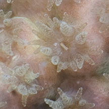 Polyps tiny with fewer short entacles. |
|
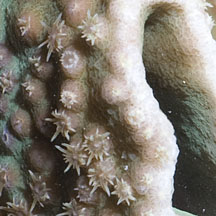 Corallites conical. |
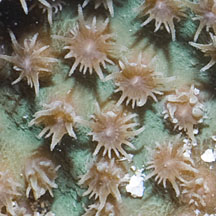 Polyps tiny with many short tentacles. |
|
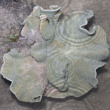 Thin disk coral Colony plate-like thin (0.2-0.5cm) shaped into a cup or inverted cone. |
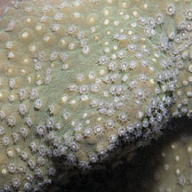 Corallites tiny low rounded bumps. |
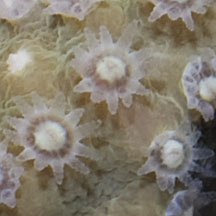 Polyps tiny with few short tentacles. |
*Species are difficult to positively identify without close examination.
On this website, they are grouped by external features for convenience of display.
| Turbinaria
species recorded for Singapore from Checklist of Cnidaria (non-Sclerectinia) Species with their Category of Threat Status for Singapore by Yap Wei Liang Nicholas, Oh Ren Min, Iffah Iesa in G.W.H. Davidson, J.W.M. Gan, D. Huang, W.S. Hwang, S.K.Y. Lum, D.C.J. Yeo, May 2024. The Singapore Red Data Book: Threatened plants and animals of Singapore. 3rd edition. National Parks Board. 663 pp. in red are those listed as threatened in the above.
|
|
Links
References
|